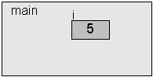

It's All About Functions
Some of the first statements made during this course were these:
include files
function declarations (prototypes)
data declarations (global)
main function header
{
data declarations (local)
statements
}
other functions
A function has the form:
return_type function_name(formal_parameters)
{
function_body
}
Here's an example of a user-defined function:
Function part Description return_type This describes the type of the data that the function will return. Almost all data types are allowed to be returned from a function. If a function returns data, then the function can be used in an expression, otherwise, it can't. (All functions return data unless they are marked as returning void.) function_name The name of the function. The name must follow the same rules that an identifier must follow. formal_parameters This is an optional comma-separated list of values that will be passed to the function. A function that takes 0 parameters will have the keyword void as the only item in the list. (Students that still think that function(void) is the same as function() are required to read this again.) function_body The body consists of all of the declarations and executable code for the function. If the function is defined to return a value, there must be at least one return statement in the body. (There can be multiple return statements.)
float average(float a, float b)
{
return (a + b) / 2;
}
A complete program using our new function:
#include <stdio.h>
float average(float a, float b)
{
return (a + b) / 2;
}
int main(void)
{
float x;
float y;
float ave;
x = 10;
y = 20;
ave = average(x, y);
printf("Average of %g and %g is %g\n", x, y, ave);
x = 7;
y = 10;
ave = average(x, y);
printf("Average of %g and %g is %g\n", x, y, ave);
return 0;
}Both the return value and the parameters are optional:Average of 10 and 20 is 15 Average of 7 and 10 is 8.5
Calling the functions:
/* No return, no parameters */ void say_hello(void) { printf("Hello!\n"); return; /* optional */ }/* No return, one parameter */ void say_hello_alot(int count) { int i; for (i = 0; i < count; i++) printf("Hello!\n"); }/* Return, no parameters */ float pi(void) { return 3.14159F; }
int main(void)
{
float p;
say_hello(); /* no arguments, needs parentheses */
say_hello_alot(5); /* one argument */
p = pi(); /* no arguments */
p = pi; /* Error, parentheses are required */
return 0; /* not optional */
}
Function Prototypes
Note the ordering of the two functions (main and average) in this program: (foo.c) 1. #include <stdio.h>
2.
3. int main(void)
4. {
5. printf("ave = %.2f\n", average(10, 20));
6. return 0;
7. }
8.
9. float average(float a, float b)
10. {
11. return (a + b) / 2;
12. }
New compilers give more information about the problems:foo.c: In function `main': foo.c:5: warning: implicit declaration of function `average' foo.c:5: warning: double format, different type arg (arg 2) foo.c: At top level: foo.c:10: error: conflicting types for 'average' foo.c:5: error: previous implicit declaration of 'average' was here
warn.c: In function 'main':
warn.c:5:3: warning: implicit declaration of function 'average' [-Wimplicit-function-declaration]
printf("ave = %.2f\n", average(10, 20));
^
warn.c:5:3: warning: format '%f' expects argument of type 'double', but argument 2 has type 'int' [-Wformat=]
warn.c: At top level:
warn.c:9:7: error: conflicting types for 'average'
float average(float a, float b)
^
warn.c:5:26: note: previous implicit declaration of 'average' was here
printf("ave = %.2f\n", average(10, 20));
^
warn.c:5:26: warning: implicit declaration of function 'average' [-Wimplicit-function-declaration]
printf("ave = %.2f\n", average(10, 20));
^
warn.c:5:26: warning: format specifies type 'double' but the argument has type 'int' [-Wformat]
printf("ave = %.2f\n", average(10, 20));
~~~~ ^~~~~~~~~~~~~~~
%.2d
warn.c:9:7: error: conflicting types for 'average'
float average(float a, float b)
^
warn.c:5:26: note: previous implicit declaration is here
printf("ave = %.2f\n", average(10, 20));
^
2 warnings and 1 error generated.
Of course, this is random, and you may likely get different garbage each time you run it. (You'll probably get zero a lot since it's the most popular "garbage" value in memory.)ave = 796482944349676280000000000000000000000000000000000000000000000000000000000000000000 000000000000000000000000000000000000000000000000000000000000000000000000000000000000000000 000000000000000000000000000000000000000000000000000000000000000000000000000000000000000000 000000.00
Removing the include file from this program yields a similar warning:
/*#include <stdio.h>*/
int main(void)
{
printf("Hello!\n");
return 0;
}
Just like all other identifiers in C, we must tell the compiler about our functions before we use (call) them. We do this with a function declaration, also called a function prototype.foo.c: In function `main': foo.c:6: warning: implicit declaration of function `printf'
This program is now perfectly fine:
#include <stdio.h> /* For printf */
/* Function prototype, notice the semicolon */
/* Prototypes do not have curly braces or body */
float average(float a, float b);
int main(void)
{
/* Both printf and average are known to the compiler */
printf("ave = %.2f\n", average(10, 20));
return 0;
}
/* Function definition, no semicolon */
/* Definition has curly braces and body */
float average(float a, float b)
{
return (a + b) / 2;
}
/* Prototype */
float average(float a, float b);
int main(void)
{
/* Define some variables */
int i;
float f1, f2, f3, f4;
double d1, d2;
/* Set some values */
f1 = 3.14F; f2 = 5.893F; f3 = 8.5F;
d1 = 3.14; d2 = 5.893;
/* Call the function in various ways */
/* Nothing wrong with these calls */
f4 = average(f1, f2);
f4 = average(5.0F, 6.0F);
f4 = average(10, 20);
average(f1, f2);
/* Potential problems when these execute */
i = average(f1, f2);
f4 = average(d1, d2);
f4 = average(3.14, 9.1F);
/* Fatal errors, compiler can't continue */
f4 = average(f2);
f4 = average(f1, f2, f3);
return 0;
}Not all compilers will warn about the potential loss of precision, but they will all emit errors for the last two. The warnings above are from Microsoft's C compiler, version 7.1. These errors below are from gcc. If you invoke gcc with an additional command line switch:
Function calls Ok Warnings Errors f4 = average(f1, f2);
f4 = average(5.0F, 6.0F);
f4 = average(10, 20);
average(f1, f2);Ok
Ok
Ok
Ok. Most of the time, you can ignore return values from functions.i = average(f1, f2);
f4 = average(d1, d2);
f4 = average(3.14, 9.1F);warning: conversion from 'float' to 'int', possible loss of data
warning: conversion from 'double' to 'float', possible loss of data
warning: conversion from 'double' to 'float', possible loss of dataf4 = average(f2);
f4 = average(f1, f2, f3);error: too few arguments to function `average'
error: too many arguments to function `average'
You will see lots of additional warnings, which are informative, but not dangerous in this case:gcc -Wconversion foo.c
warning: passing arg 1 of `average' as `float' rather than `double' due to prototype warning: passing arg 2 of `average' as `float' rather than `double' due to prototype warning: passing arg 1 of `average' as `float' rather than `double' due to prototype warning: passing arg 2 of `average' as `float' rather than `double' due to prototype warning: passing arg 1 of `average' as floating rather than integer due to prototype warning: passing arg 2 of `average' as floating rather than integer due to prototype warning: passing arg 1 of `average' as `float' rather than `double' due to prototype warning: passing arg 2 of `average' as `float' rather than `double' due to prototype warning: passing arg 1 of `average' as `float' rather than `double' due to prototype warning: passing arg 2 of `average' as `float' rather than `double' due to prototype warning: passing arg 1 of `average' as `float' rather than `double' due to prototype warning: passing arg 2 of `average' as `float' rather than `double' due to prototype warning: passing arg 1 of `average' as `float' rather than `double' due to prototype warning: passing arg 2 of `average' as `float' rather than `double' due to prototype warning: passing arg 1 of `average' as `float' rather than `double' due to prototype error: too few arguments to function `average' warning: passing arg 1 of `average' as `float' rather than `double' due to prototype warning: passing arg 2 of `average' as `float' rather than `double' due to prototype error: too many arguments to function `average'
Quick check: Does the following program compile?
float average(float a, float b);
int main(void)
{
float f1, f2, f3;
f2 = 3.14f;
f3 = 5.0f;
f1 = average(f2, f3);
return 0;
}or even like this:gcc -c main.c
It will compile cleanly without any warnings or errors and you'll be left with an object file called main.o, which will be about 875 bytes in size.gcc -Wall -Wextra -ansi -pedantic -c main.c
E:\Data\Courses\Notes\CS120\Code\Functions>dir main.o
Volume in drive E has no label.
Volume Serial Number is 5852-DBD2
Directory of E:\Data\Courses\Notes\CS120\Code\Functions
09/21/2017 08:54a 875 main.o
1 File(s) 875 bytes
0 Dir(s) 6,154,678,272 bytes free
Now, if you try to link the file:
You'll see this helpful error message:gcc main.o
The error message (from the linker) is saying to you:main.o:main.c:(.text+0xb7): undefined reference to `_average' collect2: ld returned 1 exit status
"Hey, you (Mr. Compiler) told me that this program needs to call a function called average, but I can't find it anywhere. I give up.".Note that you would have received the same error had you attempted to compile and link with one command (removing the -c, which means to compile but don't link):
gcc main.c
Please make very sure that you understand the difference between compiling and linking. We will see many more situations where the code will compile properly, but not link.
Tracing Function Calls
What is the sequence of function calls made by the program below. Specify the function being called and its parameters.
void FnB(void)
{
printf("tied the room ");
}
void FnC(void)
{
printf("together\n");
}
void FnA(void)
{
printf("That rug really ");
FnB();
}
void FnD(void)
{
FnA();
FnC();
}
int main(void)
{
FnD();
return 0;
}
The sequence is this:
main(void);
FnD(void);
FnA(void);
printf("That rug really ");
FnB(void);
printf("tied the room ");
FnC(void);
printf("together\n");
Pass By Value
In C, all function arguments are passed by value. In a nutshell, this means that any changes made to the parameters in the body of the function will not affect the values at the call site. An example will clarify:
#include <stdio.h> /* printf */ void fn(int x) { printf("In fn, before assignment, x is %i\n", x); x = 10; printf("In fn, after assignment, x is %i\n", x); } int main(void) { int i; i = 5; printf("Before call: i is %i\n", i); fn(i); /* call site */ printf("After call: i is %i\n", i); return 0; }
A copy of the value is passed to the function, so any changes made are made to the copy, not the original value. Visually, the process looks something like this:
When main begins, i is undefined:Revisiting an example. We can use the parameter (modify it) without worrying that we will be changing something in another part of the program:Next statement, i is assigned a value:The function is called and a copy of the argument is made:The parameter, x, is assigned a value:The function returns back to main and the original value is preserved:
| for loop | while loop (no extra variable) | while loop (more compact) |
|---|---|---|
|
|
|
Functions and Scope
What happens when we have a variable named A in two different functions? Does the compiler or program get confused?Declaring/defining variables inside of a function makes them local to that function. No other function can see them or access them.
void fn1(void) { int A; /* statements */ }void fn2(void) { int A; /* statements */ }
Example:
#include <stdio.h> /* printf */ /* Function prototypes */ int add3(int i, int j, int k); int mult3(int p, int q, int r); int main(void) { int a = 2; int b = 3; int c = 4; int d; int e; d = add3(a, b, c); e = mult3(a, b, c); } int add3(int x, int y, int z) { int a = x + y + z; return a; } int mult3(int a, int b, int c) { int x = a * b * c; return x; }
Technically, curly braces define a scope. This means that any time you have a pair of curly braces, a new scope is created. So, yes, this means that compound statements within loops (for, while, etc.) and conditionals (if, etc.) are in a different scope than the statements outside of the curly braces. More on scopes later... Also, it is very important that you understand the difference between formal parameters and actual parameters (arguments) and the difference between parameter names in the function prototype vs. the names in the function definition.
However, it is a convention that the names of the parameters in the prototype match the names in the definition. We will adhere to that.
The return Statement
We've already seen the return statement many times so far. It is used when we want to leave (i.e. return from) a function.The general form is:
return expression ;
|
|
|
|
|
Sadly, these are both just warnings, and the first one always produces undefined behavior.In function `f1': warning: `return' with no value, in function returning non-void In function `f2': warning: `return' with a value, in function returning void
Divide and Conquer
The main point of using functions is to break the program into smaller, more manageable pieces. The technique is called Divide and Conquer and can be visualized like this:
The idea is that it will be easier to work individually on smaller parts of the whole problem, rather than try to solve the entire problem at once.
As Bjarne Stroustrup (The Father of C++) says:
"The number of errors in code correlates strongly with the amount of code and the complexity of the code. Both problems can be addressed by using more and shorter functions. Using a function to do a specific task often saves us from writing a specific piece of code in the middle of other code; making it a function forces us to name the activity and document its dependencies."
More on Scope
The scope or visibility of an identifier is what determines in which parts of the program the identifier can be seen.This contrived example shows three different scopes. (The curly braces for each scope are highlighted.)
| All statements are legal | Some statements are illegal |
|---|---|
|
|
Notes about variables in block scope: (a.k.a. local variables)
| Indenting and whitespace makes it easy to see | Bad formatting makes it hard to see | Even worse | ||
|---|---|---|---|---|
void f3(int param) /* Scope of param starts here */
{
int a; /* Scope of a starts here */
int param; /* Error: param already defined in this scope */
int a; /* Error: a already defined in this scope */
while (a < 10)
{
int a; /* Ok, different scope, different a */
int param; /* Ok, different scope, different param */
int a; /* Error: a already defined in this scope */
if (b == 2)
{
int a; /* Ok, different scope, different a */
int param; /* Ok, different scope, different param */
} /* Scope of third a and param ends here */
} /* Scope of second a and param ends here */
} /* Scope of first a and param ends here */
|
void f3(int param) /* Scope of param starts here */
{
int a; /* Scope of a starts here */
int param; /* Error: param already defined in this scope */
int a; /* Error: a already defined in this scope */
while (a < 10)
{
int a; /* Ok, different scope, different a */
int param; /* Ok, different scope, different param */
int a; /* Error: a already defined in this scope */
if (b == 2)
{
int a; /* Ok, different scope, different a */
int param; /* Ok, different scope, different param */
} /* Scope of third a and param ends here */
} /* Scope of second a and param ends here */
} /* Scope of first a and param ends here */
|
void f3(int param){ /* Scope of param starts here */
int a; /* Scope of a starts here */
int param; /* Error: param already defined in this scope */
int a; /* Error: a already defined in this scope */
while (a < 10){
int a; /* Ok, different scope, different a */
int param; /* Ok, different scope, different param */
int a; /* Error: a already defined in this scope */
if (b == 2){
int a; /* Ok, different scope, different a */
int param; /* Ok, different scope, different param */
} /* Scope of third a and param ends here */
} /* Scope of second a and param ends here */
} /* Scope of first a and param ends here */
|
Notes about global variables:
int a; /* The scope for a starts here. */
/* Memory for a is allocated before program starts. */
/* The value of a is 0. Global variable. */
void f2(int param)
{
int b; /* Memory for b is allocated when the function starts. */
/* The value of b is undefined. (Local variable) */
b = param; /* Ok, param is in scope. */
b = a; /* Ok, a is in scope. */
} /* Memory for b is deallocated here. */
int main(void)
{
int x; /* Memory for x is allocated when main starts. */
/* The value of x is undefined. Local variable. */
x = 10; /* The value of x is now 10. */
f2(x); /* Memory for the copy of x is allocated when f2 is called. */
/* Memory for the copy of x is deallocate when function returns.*/
return 0;
}
/* The scope for global a ends at the end of the file. */
/* Memory for global a is deallocated after program completes. */
Global variables are an advanced feature in C and are not to be used in ANY code in CS120. EVER.